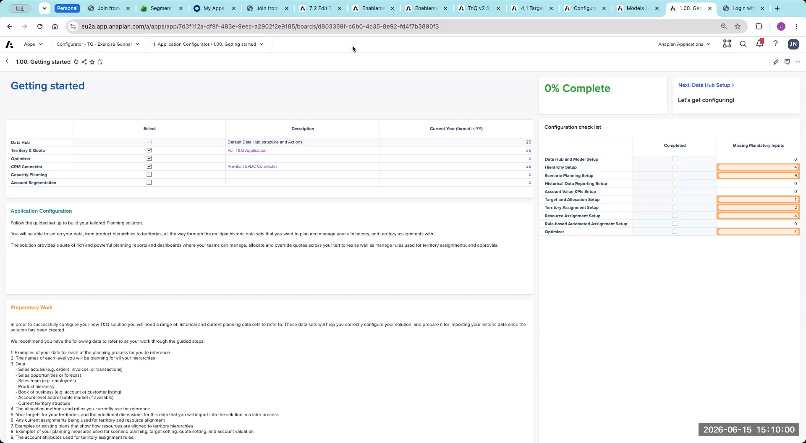
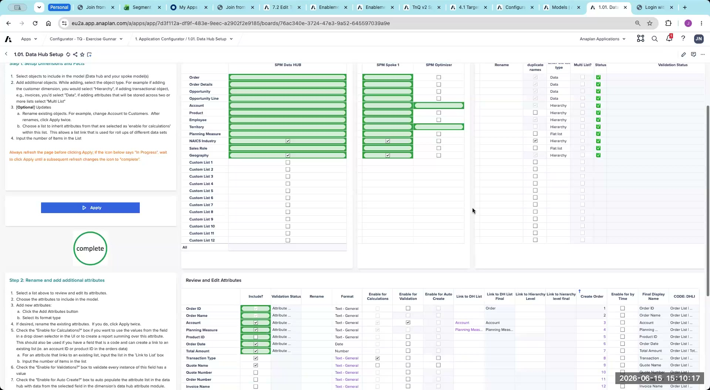
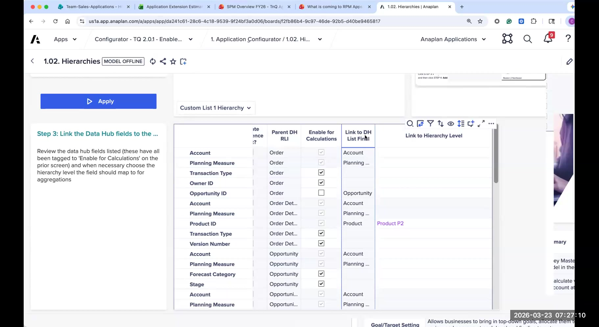
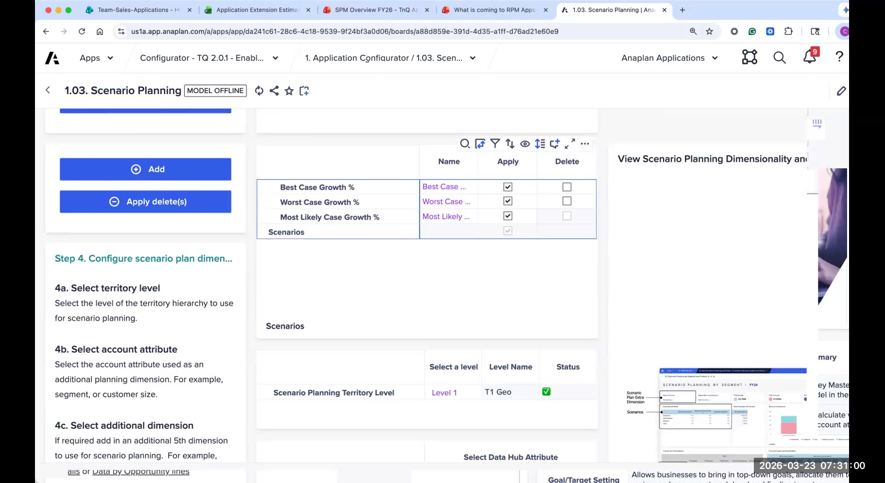
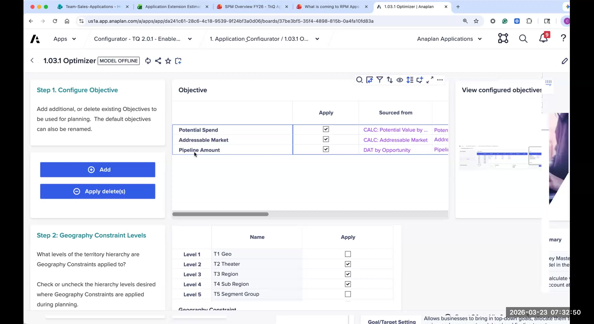
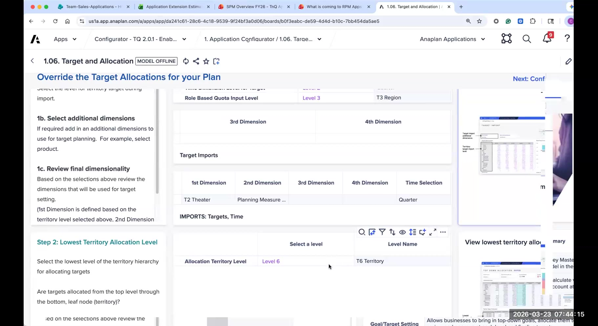
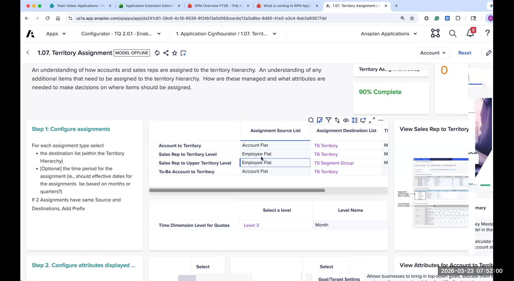
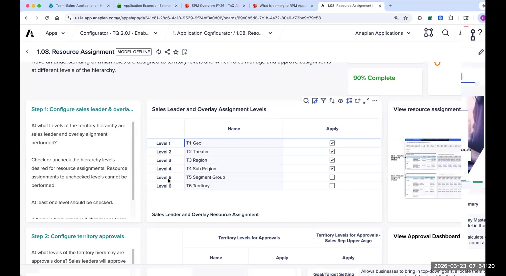
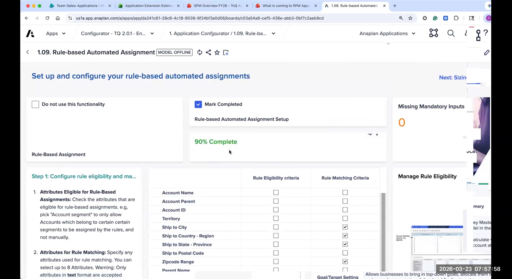

Lab: Configurator Exercise
Work through the CloudWorks case study and make real configuration decisions for each page
This lab is an exercise — there are no answers on this page. Interpret the CloudWorks case study data yourself and make your own configuration decisions. Answer key available in the Appendix →
Scenario: CloudWorks Technologies
CloudWorks Technologies is a fictional B2B SaaS company that sells cloud infrastructure and developer tools to mid-market and enterprise customers. They have approximately 180 sales reps across North America and EMEA, organized into a 5-tier territory hierarchy. They currently manage territory planning and quota-setting in Excel and are moving to Anaplan T&Q for the coming fiscal year.
You have been brought in as the Anaplan delivery lead to complete the T&Q configuration for CloudWorks. The customer has completed Session Zero and provided sample data files. Your job is to work through each configurator page and make real decisions based on the information provided.
For each configurator page: review the case study data provided, then go to that page in your configurator instance and make your configuration decisions. There is no step-by-step answer guide here — you are making the call. Facilitator-led debrief follows at the end.
What you'll do
- Read the CloudWorks case study and map its data files (Account, Employee, Opportunity, Opportunity Line, Territory) onto the configurator's standard Objects and Attributes
- Make configuration decisions for each page from 1.00 Getting Started through 1.09 Rule Engine Setup, including the 1.03.1 Optimizer page
- Decide which attributes to enable, and for each enabled attribute choose Enable for Calculations, Enable for Validation, and Enable for Auto Create
- Set the 5-tier territory hierarchy, the planning measures (ARR + New Logos), the target cascade level, and the level at which each assignment type operates
- Verify each substantive page with the inline Check my Work button before moving to the next page
- Be ready to defend each decision at the facilitator-led debrief
CloudWorks — Company Profile
Organization
- Sales reps: ~180 AEs across NA and EMEA
- Overlay reps: ~25 SEs (pre-sales engineers)
- Markets: Mid-Market and Enterprise
- Products: Compute Platform (primary), Developer Suite (secondary)
Hierarchy (5 tiers)
- Level 1: Geo (e.g., NA, EMEA)
- Level 2: Area (e.g., US-East, US-West, UK, DACH)
- Level 3: Region (e.g., Northeast, Pacific, Benelux)
- Level 4: Sub-Region (e.g., NY Metro, Pacific NW, Germany)
- Level 5: Territory (individual rep territories)
Finance & Planning
- Planning measures: ARR (primary) and New Logos (secondary)
- Fiscal year: February – January
- Finance enters targets at the Geo level
- Historical actuals: 2 years
Data & Integration
- CRM: Salesforce
- Data Hub: New (no existing Anaplan workspace)
- Integration: ADO confirmed by IT
- Account attributes in source data: Account Type, Industry, Employee Count, Country, Current ARR, Potential Spend
Dataset Files
The following sample data files have been provided by CloudWorks. Click each filename to download. Review the column headers and sample values — they inform every configuration decision you'll make below.
| File | Description | Key Columns |
|---|---|---|
Account.xlsx |
Full account list with firmographic attributes | Account ID, Account Name, Account Type, Industry, Employee Count, Country, HQ State, Current ARR, Potential Spend |
Employee.xlsx |
Sales rep and manager roster | Employee ID, Employee Name, Job Family, Job Category, Business Unit, Cost Center, Territory Code, Start Date |
Opportunity.xlsx |
Opportunity header records | Opportunity ID, Account, Stage, Forecast Category, Planning Measure, Estimated Close Date, Is Won?, Is Closed? |
Opportunity Line.xlsx |
Closed-won opportunity lines (actuals) | Opportunity ID, Opportunity Line ID, Account ID, Product, Amount, Close Date, New Logo Flag |
Territory.csv |
Full territory hierarchy — all 5 levels | Territory Code, Territory Name, Sub-Region, Region, Area, Geo, Territory Type |
1.00 — Getting Started

Go to configurator page 1.00: Getting Started
Review the CloudWorks case study data above and complete the configuration for this page.
The Getting Started page confirms the project scope before configuration begins. Review the page contents and verify you are in the correct workspace and working with the right configurator version.
Case Study Data:
- CloudWorks is a new Anaplan customer — no prior T&Q workspace exists
- Modules in scope: T&Q Planning and SPM Optimizer
- You are working in the V2 configurator
Your Task:
- Review the Getting Started page. Note any pre-configuration instructions or flags from the App Engineering team.
- What do you need to confirm or gather before you can proceed to page 1.01?
- What questions would you ask the customer at the very start of a configuration session?
1.01 — Data Hub Setup

Go to configurator page 1.01: Data Hub Setup
Review the CloudWorks case study data below and complete the configuration for this page.
This is the most critical page. You are mapping CloudWorks's customer data objects to Anaplan's data model and deciding which attributes to enable and how to configure the three boolean flags for each.
Case Study Data:
Open Account.xlsx and Employee.xlsx and review the column headers. The following attributes are present in the CloudWorks data:
- Account.xlsx columns: Account ID, Account Name, Account Type, Industry, Employee Count, Country, HQ State, Current ARR, Potential Spend
- Employee.xlsx columns: Employee ID, Employee Name, Job Family, Job Category, Business Unit, Cost Center, Territory Code, Start Date
- Opportunity Line.xlsx columns: Opportunity ID, Opportunity Line ID, Account ID, Product, Amount, Close Date, New Logo Flag
Additional context from Session Zero:
- CloudWorks plans to filter accounts by Industry and Account Type when building territory assignment rules
- Job Family will be used in reporting dashboards to compare quota attainment by role type
- New product lines are added a few times per year — the team wants the app to handle new values automatically
- CloudWorks does not currently use Order or Order Line data — their actuals flow entirely through Opportunities
Your Task:
- Review the standard Objects and Attributes in the configurator. Which attributes from the CloudWorks data match standard attributes? Which need to be renamed? Which require adding a new attribute?
- For each attribute you enable, decide: should it have Enable for Calculations? Enable for Validation? Enable for Auto Create? Be ready to explain your reasoning for each.
- CloudWorks has no Order or Order Line data. How does that affect what you configure here?
- Which attributes should not be enabled, and why?
When you've mapped the CloudWorks Account, Employee, and Opportunity Line attributes onto the configurator's standard Objects and Attributes and set the three boolean flags for each, click below to verify.
Data Hub objects and attributes mapped for CloudWorks.
- Account attributes reviewed → Account Type, Industry, Country, Current ARR, Potential Spend mapped to standard or custom attributes as appropriate
- Employee attributes reviewed → Job Family, Job Category, Business Unit, Territory Code mapped; Job Family kept as a list attribute for downstream reporting
- Opportunity Line attributes reviewed → Product handled with auto-create so new product values flow in automatically
- Three-flag decision recorded per enabled attribute → Enable for Calculations, Enable for Validation, Enable for Auto Create
- Order / Order Line objects left disabled → CloudWorks has no Order data; actuals flow through Opportunities only
- Attributes excluded from enablement noted → with a one-line reason for each
Ready for 1.02 — define the territory hierarchy and map the Calculations-enabled attributes to the right level.
1.02 — Hierarchy Setup

Go to configurator page 1.02: Hierarchy Setup
Review the CloudWorks case study data below and complete the configuration for this page.
Define the hierarchy structure for all hierarchies in the CloudWorks app. Start with the territory hierarchy. After applying level counts and names, map any attributes flagged "Enable for Calculations" to the appropriate hierarchy level.
Case Study Data:
Open Territory.xlsx and review the columns. The file contains the following distinct levels:
- Column: Geo — examples: NA, EMEA
- Column: Area — examples: US-East, US-West, UK, DACH, Nordics
- Column: Region — examples: Northeast, Southeast, Pacific, Benelux, Germany
- Column: Sub-Region — examples: NY Metro, New England, Pacific NW, Bavaria
- Column: Territory — individual rep territory codes and names
Additionally, Job Family was configured in 1.01 as a custom hierarchy list for employee reporting.
Your Task:
- How many levels does the CloudWorks territory hierarchy have? Set the level count accordingly.
- Enter the exact names for each tier as they appear in the CloudWorks data. Should you add a level suffix (L1, L2, etc.)? Why or why not?
- After applying, the configurator will ask you to map attributes enabled for Calculations to applicable hierarchies. Which attributes need to be mapped, and to which hierarchy level?
- Is there a second hierarchy (beyond territory) to configure? What would it look like for CloudWorks?
When you've set the level count, named each tier, and mapped your Calculations-enabled attributes to the right hierarchy levels, click below to verify.
Hierarchy structure configured for CloudWorks.
- Territory hierarchy level count → 5 (Geo, Area, Region, Sub-Region, Territory)
- Tier names match the source columns → spelled exactly as they appear in Territory.csv
- Level-suffix decision recorded → with a one-line reason
- Calculations-enabled attributes mapped to the right level → e.g., Country at the level it identifies, Industry / Account Type at the account level they apply to
- Second hierarchy decision → whether Job Family becomes its own hierarchy for employee reporting, with a reason
Ready for 1.03 — wire up the actuals source and define the planning measures.
On page 1.09 you'll want to use Country as a rule condition. Which boolean flag on page 1.01 makes an attribute available for selection there?
1.03 — Scenario Planning & Planning Measures

Go to configurator page 1.03: Scenario Planning
Review the CloudWorks case study data below and complete the configuration for this page.
Configure the transactional data sources that feed actuals and forecasts into the app, and define the planning measures CloudWorks will plan and quota against.
Case Study Data:
Open Opportunity Line.xlsx and review the columns:
- Actuals value field: Amount
- Date field for time placement: Close Date
- New Logo actuals: New Logo Flag (boolean — 1 = new logo, 0 = expansion)
Planning context from Session Zero:
- CloudWorks plans ARR as the primary measure (currency, USD)
- CloudWorks also plans New Logos as a count measure
- Fiscal year: February – January
- Planning time scale: quarterly
- CloudWorks is not planning a pipeline/forecast measure at this time
Your Task:
- Configure the actuals data source: which table, which field, which time scale, which date field?
- Add your two planning measures. What are the measure names, types, and source attributes for actuals and forecast values?
- Should you add a seasonality configuration for either measure? What information would you need from the customer to decide?
- CloudWorks mentioned they might want to add a Services ARR measure "in a few months." How does this affect your decision today?
When you've configured the actuals source and added the two planning measures (ARR and New Logos), click below to verify.
Actuals source and planning measures configured.
- Actuals data source → Opportunity Line, Amount field, Close Date for time placement, quarterly time scale
- Planning measure: ARR → currency (USD), primary planning measure
- Planning measure: New Logos → count, driven by the New Logo Flag on Opportunity Line
- Fiscal year → February through January, matching CloudWorks's calendar
- Seasonality decision recorded → with the open question you'd take back to the customer
- Services ARR question handled → explicit decision to add now or defer, with a reason
Ready for 1.04 — Historical Data Reporting (pending SME content).
1.04 — Historical Data Reporting
Lab steps for this page are pending. Once the Configurator Review section 1.04 content is confirmed by an SME, exercise steps will be added here. For now, navigate to Page 1.04 in your configurator instance and review its contents, noting what configuration decisions are available.
Go to configurator page 1.04: Historical Data Reporting
Review the case study handout and the in-app Step labels (left side of each table) to understand what each table configures. Make your configuration decisions based on CloudWorks data.
1.05 — Account Value KPIs
Lab steps for this page are pending. Once the Configurator Review section 1.05 content is confirmed by an SME, exercise steps will be added here. For now, navigate to Page 1.05 in your configurator instance and review its contents, noting what configuration decisions are available.
Go to configurator page 1.05: Account Value KPIs
Review the case study handout and the in-app Step labels (left side of each table) to understand what each table configures. Make your configuration decisions based on CloudWorks data.
1.03.1 — Optimizer

Go to configurator page 1.03.1: Optimizer
Review the CloudWorks case study data below and complete the configuration for this page.
Configure the objectives, geography constraint levels, and account attributes for the Optimizer. Remember: all attributes used here must have been enabled for Calculations in page 1.01.
Case Study Data:
- CloudWorks wants to use the Optimizer to help balance territory workload by Potential Spend
- They also want to add Pipeline Amount as an objective for future balancing scenarios
- CloudWorks territories are distributed across two Geos (NA, EMEA) and five Areas — they want geography constraints to apply at the Area level
- Account attribute available for constraints: Potential Spend (enabled for Calculations in 1.01)
- Territory Type (e.g., Mid-Market, Enterprise) is a potential mix constraint
Your Task:
- What objectives will you configure? Review the default objectives and decide what to keep, rename, or add.
- At what hierarchy level(s) should geography constraints be applied for CloudWorks?
- Which account attribute should be selected for constraints? Is it available for selection? Why or why not?
- What mix constraint attribute would you choose, and what does that mean for how the optimizer will balance territories?
When you've selected objectives, set geography constraint levels, and chosen the account and mix constraint attributes, click below to verify.
Optimizer configured for CloudWorks.
- Objectives configured → Potential Spend as the primary balancing objective; Pipeline Amount added as a future scenario where appropriate
- Geography constraint level → Area (Level 2), per CloudWorks's requirement
- Account attribute for constraints → Potential Spend, available because it was enabled for Calculations on 1.01
- Mix constraint attribute → Territory Type (Mid-Market vs. Enterprise), with a one-line explanation of how the balance reads
- Cross-check against 1.01 → every attribute referenced here has Enable for Calculations switched on
Ready for 1.06 — define how Finance targets enter the app and cascade down the hierarchy.
Finance gives CloudWorks annual targets at the Geo level and quarterly seasonality percentages. Which combination of cascade level and time granularity matches what 1.06 asks for?
1.06 — Target and Allocation

Go to configurator page 1.06: Target and Allocation
Review the CloudWorks case study data below and complete the configuration for this page.
Configure how Finance targets enter the app and how they cascade down the 5-tier CloudWorks hierarchy. Also set the time granularity for target planning and decide on allocation methods.
Case Study Data:
- Finance provides annual targets broken out by Geo (NA and EMEA totals)
- CloudWorks plans quarterly — Finance provides quarterly seasonality percentages
- Sales leadership wants to allocate targets using historical actuals as the primary weighting method
- Pipeline Amount should be available as an optional allocation method
- Sales Ops may need to apply manual overrides at any level below Geo
- No additional target dimensions beyond territory (no product or segment splits at this time)
Your Task:
- At which hierarchy level does Finance enter targets for CloudWorks? Set the cascade starting level accordingly.
- What time granularity should be set for target planning? What does that mean for how targets are imported?
- Which allocation methods will you enable? Should Pipeline Amount be added? What does it require from the data?
- CloudWorks's head of Sales Strategy mentioned they might want to split targets by product line (Compute Platform vs. Developer Suite) next year. How does that affect your configuration today?
When you've set the cascade starting level, the time granularity, and the allocation methods, click below to verify.
Target and Allocation configured.
- Cascade starting level → Geo (Level 1), per Finance's input pattern
- Target time granularity → quarterly, matching CloudWorks's planning cadence
- Allocation methods enabled → historical actuals as primary; Pipeline Amount available as optional
- Manual override capability → Sales Ops can override at any level below Geo
- No additional target dimensions → no product or segment splits configured today
- Product-split question handled → explicit decision on whether to lay groundwork now or revisit next year, with a reason
Ready for 1.07 — set the hierarchy level for account, rep, and manager assignments.
1.07 — Territory Assignment

Go to configurator page 1.07: Territory Assignment
Review the CloudWorks case study data below and complete the configuration for this page.
Configure at which level of the 5-tier hierarchy each type of assignment operates — for accounts, for sales reps, and for first-line managers. Also set the quota time dimension. Note: all assignment methods are generated automatically; you are configuring the level at which each operates, not whether to enable them.
Case Study Data:
- CloudWorks territory hierarchy: Geo → Area → Region → Sub-Region → Territory
- Individual accounts are assigned to the Territory level (Level 5)
- Sales reps are assigned to specific Territories (Level 5)
- First-line managers oversee Sub-Regions (Level 4) — each manager covers 3–6 territories
- Quota will be tracked at the monthly level for individual reps, even though Finance enters targets quarterly
- Employee.xlsx contains a Territory Code column that maps each rep to their current territory
Your Task:
- At what hierarchy level should account assignment operate for CloudWorks?
- At what hierarchy level should sales rep assignment operate?
- At what hierarchy level should first-line manager assignment operate?
- What time dimension level should quota be set at? Why does this differ from the target planning granularity set in 1.06?
- Read the in-app instructions for this page carefully — do they change any of your initial decisions above?
When you've set the operating level for each assignment type and the quota time dimension, click below to verify.
Territory assignment levels set for CloudWorks.
- Account assignment level → Territory (Level 5)
- Sales rep assignment level → Territory (Level 5)
- First-line manager assignment level → Sub-Region (Level 4)
- Quota time dimension → monthly, finer-grained than the quarterly target cadence on 1.06
- Reason for the time-grain mismatch recorded → targets are planned quarterly, but rep quotas track monthly for in-period management
Ready for 1.08 — configure leader and overlay resource assignments and the initial rep-to-territory mapping.
1.08 — Resource Assignment

Go to configurator page 1.08: Resource Assignment
Review the CloudWorks case study data below and complete the configuration for this page.
Configure at which hierarchy levels sales leader and overlay rep assignments operate, which hierarchy levels require approval for resource assignments, and which employee attribute is used to initialize rep-to-territory mapping.
Case Study Data:
- CloudWorks has ~180 field AEs assigned at the Territory level
- ~25 SE (pre-sales engineer) overlay reps each cover an entire Area (Level 2)
- Sales leaders at the Region level (Level 3) are responsible for approving resource assignments within their Regions
- Assignments below the Region level do not require a separate approval — they flow directly
- Employee.xlsx has a Territory Code column that identifies each rep's current territory — this should be used for the initial rep-to-territory assignment at go-live
Your Task:
- At what hierarchy level should sales leader resource management operate?
- At what hierarchy level should SE overlay rep assignments operate?
- Which hierarchy levels require approval for resource assignment changes?
- Which attribute from Employee.xlsx should be mapped as the "Sales Rep Attribute for Territory" for the initial assignment? Why is this important?
When you've set the resource assignment levels, the approval levels, and the initial rep-to-territory attribute, click below to verify.
Resource assignment configured for CloudWorks.
- Sales leader resource management level → Region (Level 3), per CloudWorks's approval structure
- SE overlay rep assignment level → Area (Level 2)
- Approval-required levels → Region and above; assignments below Region flow without separate approval
- Sales Rep Attribute for Territory → Territory Code from Employee.xlsx, used for the initial rep-to-territory assignment at go-live
- Reason for that attribute choice recorded → one-line explanation of why this attribute drives the initial mapping
Ready for 1.09 — set eligibility and rule condition attributes for the Rule Engine.
1.09 — Rule Engine Setup

Go to configurator page 1.09: Rule Engine Setup
Review the CloudWorks case study data below and complete the configuration for this page.
Configure which account attributes define eligibility for rule-based assignment, and which account attributes can be used as rule conditions. Remember: all attributes used here must be list-formatted — they must have been enabled for Calculations in page 1.01.
Case Study Data:
From Session Zero, CloudWorks described the following approach to rule-based account assignment:
- Only accounts with Employee Count > 50 are eligible for rule-based assignment — smaller accounts go to a manual pool managed by Sales Ops
- The primary rule logic is based on Industry and Account Type — e.g., "Healthcare accounts with Account Type = Enterprise → EMEA Enterprise Territory"
- A secondary rule dimension is Country — some territories are country-specific
- CloudWorks does not want to use Employee Count as a rule condition (only as an eligibility filter)
Attributes enabled for Calculations in 1.01 (available for selection here):
- Account Type ✓
- Industry ✓
- Country ✓
Attributes not enabled for Calculations (not available for selection):
- Employee Count (stored as a number, not a list)
- HQ State (not enabled in 1.01)
Your Task:
- Which attribute(s) should be selected as eligibility attributes? What does selecting an eligibility attribute mean for accounts that don't match?
- Which attributes should be selected as rule condition attributes? Which should be excluded and why?
- CloudWorks wants to use Employee Count as an eligibility filter — but it's not a list-formatted attribute. What would you do? What options are available?
- After completing this page, what would be a concrete first rule you'd suggest CloudWorks write in the generated app?
When you've selected eligibility attributes, rule condition attributes, handled the Employee Count question, and drafted a first concrete rule, click below to verify.
Rule Engine configured for CloudWorks.
- Eligibility attributes selected → with a note on what it means for accounts that fail eligibility (manual pool managed by Sales Ops)
- Rule condition attributes selected → Account Type, Industry, Country — all confirmed list-formatted from 1.01
- Excluded attributes noted → Employee Count and HQ State, with the one-line reason for each
- Employee Count handling decided → concrete approach for using it as eligibility despite not being list-formatted (e.g., recommended change back on 1.01, or a workaround)
- First concrete rule drafted → example like "Industry = Healthcare AND Account Type = Enterprise → EMEA Enterprise Territory"
All configurator pages complete. Head to the Debrief Questions below and compare your decisions against the Answer Key in the Appendix.
CloudWorks wants Employee Count to act as a rule-eligibility filter on page 1.09, but it appeared in the Account.xlsx data as a number and was never enabled for Calculations on 1.01. What's the cleanest fix?
Debrief Questions
When the group reconvenes, the facilitator will walk through the answer key and discuss decision points and tradeoffs. Before the debrief, think through the following:
- Which configuration page required the most judgment? What additional information would you want from a real customer before making that call?
- CloudWorks asked about adding a Services ARR measure "next year." What's your recommendation — add it now or wait? What's the cost of each choice?
- On page 1.01, what happens if a customer has duplicate attribute names across Opportunity and Opportunity Line? How do you handle it?
- You configured a 5-tier hierarchy. What would change in pages 1.06, 1.07, and 1.08 if CloudWorks had decided to flatten to 4 tiers?
- On page 1.09, CloudWorks couldn't use Employee Count as a rule condition because it's not list-formatted. What pre-work could you have done in 1.01 to make it available?
When the group reconvenes, refer to the Answer Key in the Appendix to compare your decisions. There are often multiple valid approaches — the goal is to understand the reasoning behind each choice, not to match the answer key exactly.